Start dragging a file
From File Explorer, your desktop, anywhere. One file or a whole selection.
Start dragging any file, tap Shift, and a wheel of formats and tools opens right under your cursor. Drop it on one. Photos, PDFs, video, audio and documents are converted or edited on your own PC, and nothing is uploaded.
No app to open, no menus to hunt through, no upload page. FileSmith lives in the tray and appears exactly when you're holding a file.
From File Explorer, your desktop, anywhere. One file or a whole selection.
Keep holding the file. The wheel opens under your cursor with only what fits that file.
It's done in place, saved next to the original. Click the message to see it in Explorer.
This is the wheel, working in your browser. Pick a kind of file, hover the segments, and hold the centre to flip to Tools. You can also drop one of your own files on it.
Recorded on a Windows 11 desktop: a real drag out of File Explorer, a real tap of Shift, real files saved. Nothing here is a mock-up.
Every clip, picture and sound on one timeline, with playback in sync. It's as capable as the editors you know, without the clutter. Opens from Edit video or Join clips on the wheel.
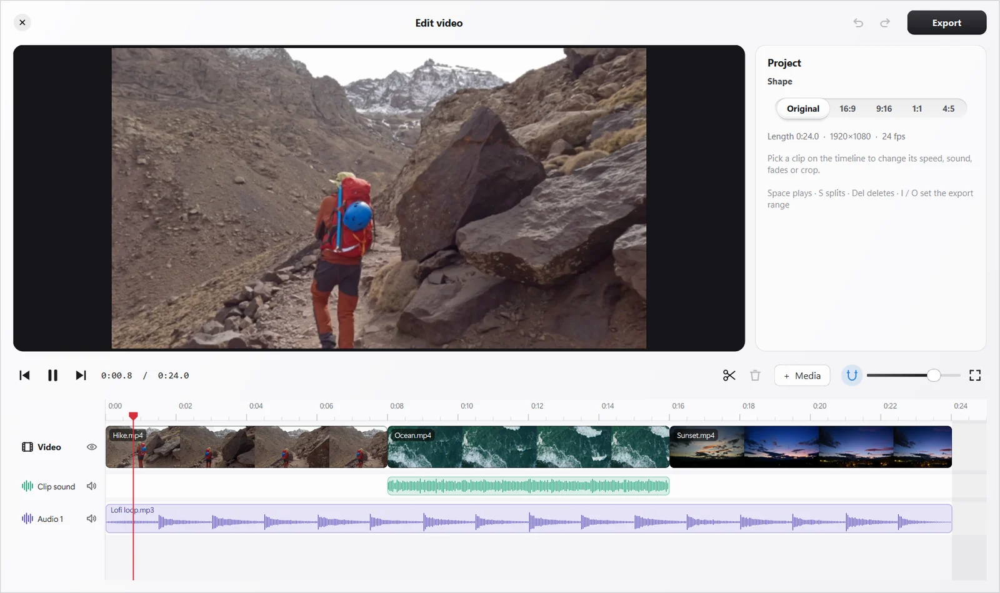
Split, rearrange, merge, number, watermark, lock and unlock, or turn a PDF into a real Word document. Each tool shows you the actual pages before it saves.
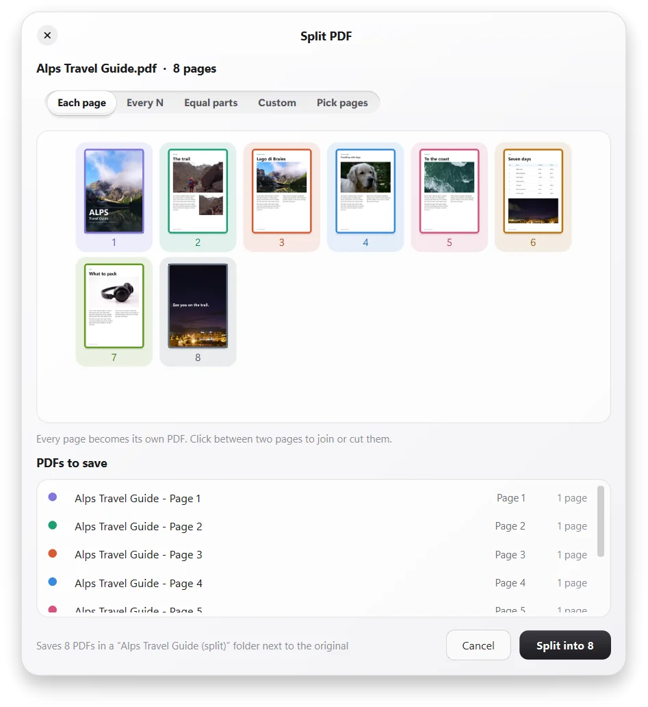
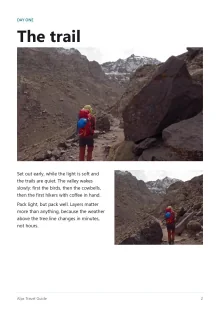
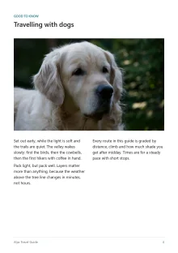
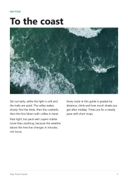
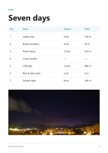
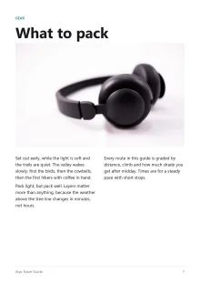
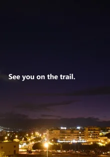
In an “Alps Travel Guide (split)” folder, next to the original.
Saved as “Alps Travel Guide organized.pdf”. Your original stays as it was.
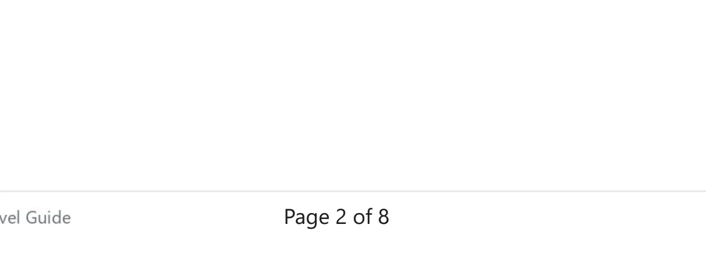
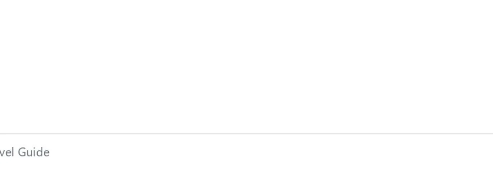
BeforeAfterReal output from FileSmith, on page 2 of the travel guide.
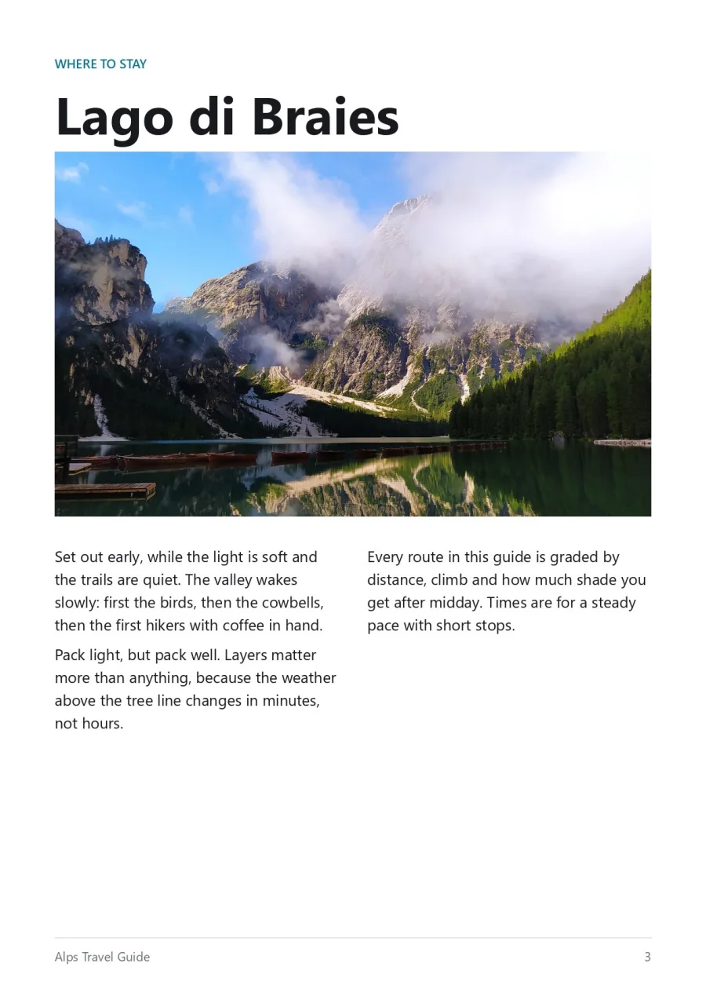
BeforeAfterReal output from FileSmith. The text stays selectable underneath.
“Alps Travel Guide protected.pdf”, AES-256. FileSmith can't recover a forgotten password, so keep it safe.
Each page, every N pages, equal parts, your own cuts, picked pages, or one PDF per chapter.
FileSmith's own engine rebuilds the page offline: fonts, sizes, bold and colour; columns and headings; bulleted and numbered lists; headers and footers with page numbers; tables with merged cells, borders and shading; links; and every picture at its original quality.
Hover DOCX to fan out DOCX + OCR. It reads the text of scanned pages, tables and bullets included, entirely on your PC. Busy scans like ID cards are fine.
FileSmith picks the right method on its own. Photos of people, products and pets go through a small AI model that runs on your PC. Signatures, stamps and documents get their ink lifted off the paper cleanly.
The quick fixes, done properly: exact sizes, target file sizes, clean crops and a polished background.
Pixels, centimetres or inches, a compression level, or "under 200 KB", with a live before/after.
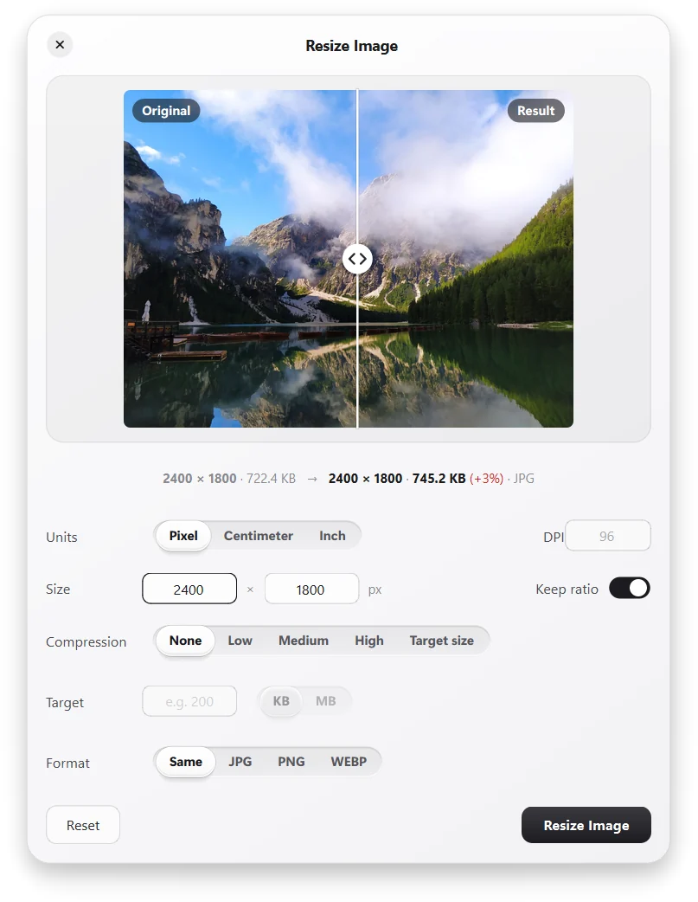
Free, 1:1, 16:9, 9:16, 4:3, 3:4 or the original, plus exact pixel sizes.
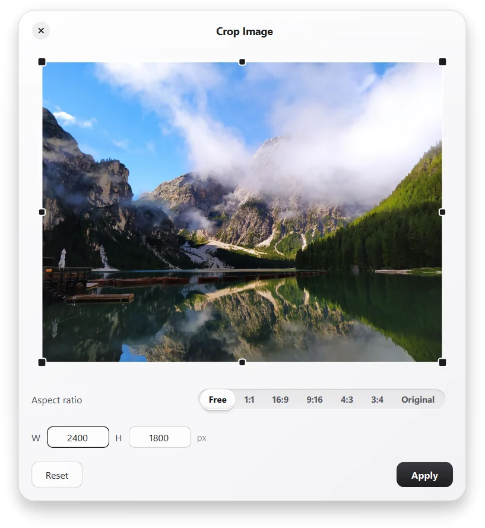
Put a cut-out on a colour, gradient or picture, with padding, rounded corners and a soft shadow.
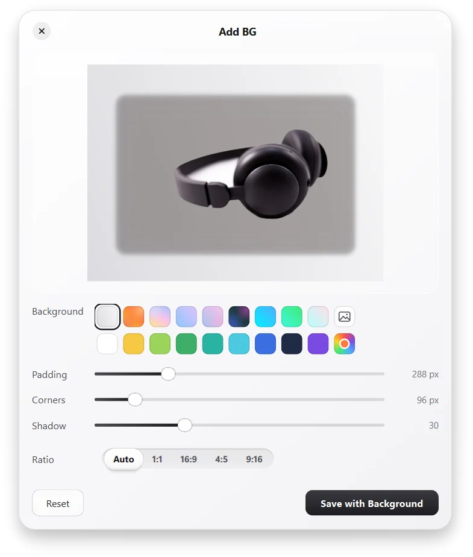
Shrink photos for email, turn them the right way up, remove location and camera data before you share, or combine a stack of images into one PDF. iPhone HEIC photos and modern AVIF images open and convert like any other.
Type a question like "heic to jpg" or "pdf to word", or just a format, to see what FileSmith can do with it.
Twelve colour themes, five real frosted-glass looks that blur whatever is behind the wheel, and a custom palette with your own five colours. Then pick the font, the text size, the wheel size (60–150%) and how snappy it feels.
The first five are real frosted glass: the wheel blurs and colour-boosts whatever is behind it. Every picture here is the real app.
There's no server to send them to. Every conversion, every edit and both AI models run on your own PC, and they work with the internet unplugged.
files uploaded. The only thing FileSmith ever downloads is the note saying which version is newest.
accounts, sign-ins or trackers.
about how long the wheel takes to appear after you tap Shift.
animation, drawn from a cache so your PC barely notices it.
FileSmith lives in the tray near the clock. Click the icon for Settings. Everything else happens on the wheel.
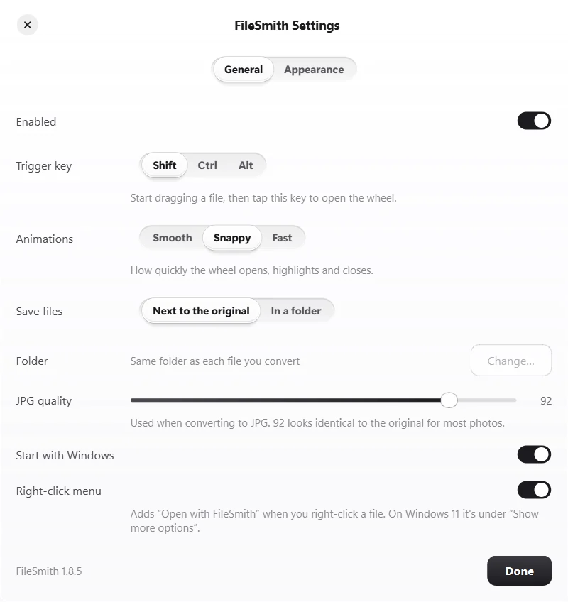
One small installer. No admin rights, no account, and installing a newer version over the old one keeps your settings.
9248b2c87d19db0feaf6d5806fd0d1c2001275ac0e7af374cadb0f1b89307b05FileSmith isn't code-signed yet, so the first time you run the installer Windows may say "Windows protected your PC". Click More info → Run anyway. The SHA-256 above lets you check that the file you downloaded is the one published here.
No. Everything happens on your PC, including Remove BG and the OCR that reads scanned pages. The only time FileSmith goes online is a once-a-day check for a newer version, which sends nothing about you or your files (and you can turn it off).
Never. Results are saved as new files next to the original (or in a folder you choose), with clear names like Report organized.pdf or Photo No BG.png. If a name is taken, a new one is picked.
Change the trigger to Ctrl or Alt in Settings. You can also skip dragging entirely: right-click files and choose Open with FileSmith.
The installer isn't code-signed yet, so Windows doesn't recognise the publisher. Click More info → Run anyway. You can compare the file's SHA-256 with the one on this page.
No admin rights: FileSmith installs into your own user folder. Word and PowerPoint aren't needed. If they're installed, FileSmith uses them for the most faithful DOCX → PDF and slides → PDF. Otherwise it uses LibreOffice if you have it, or its own renderer.
You don't have to: FileSmith checks once a day, shows what's new, and installs with one click. It never interrupts a conversion or an export, and your settings, startup entry and right-click entry stay as they are. You can also choose Check for updates… in the tray menu, or turn on automatic installs in Settings. (Versions before 1.9.0 update by running the newest installer from this page.)
Settings → Apps → FileSmith → Uninstall. That removes the app, its startup entry and its right-click entry.
FileSmith is made for Windows 10 and 11 on 64-bit PCs.